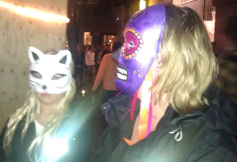

|
|
راهپیمایی با ماسک علیه تبعیض
سه شنبه7 شهریور 1391
تغییر برای برابری - «ماسک واک» عنوان برنامه ای اعتراضی علیه تبعیض بود که در فستیوال مالموی سوئد برگزارشد. دراین حرکت ابتکاری که از سوی شبکه فمینیستی مالمو علیه تبعیض برگزار شد، شرکت کنندگان ضمن استفاده از ماسک های مختلف در خیابان های مالمو به راهپیمایی پرداختند. صف مقدماتی این راهپیمایی را گروه موسیقی زنان تشکیل می دادند. صدای موسیقی آنان ضمن جلب توجه مردم به شعارها و پلاکاردهای راهپیمایان، آنان را تماشا، همراهی و حتی رقص جمعی وا می داشت.

طبق آنچه در بیانیه معترضان آمده بود، با همه افراد در جامعه سوئد به یکسان برخورد نمی شود. تبعیض را بسیاری در زندگی روزمره تجربه کرده اند. تبعیض در بازارکار، بازار مسکن، خدمات درمانی، امور قضایی، در مدرسه و ملاقات با مسئولان بچشم می خورد.

برپایه تحقیقات سازمان علیه تبعیض و موسسه ارزشیابی سیاست آموزشی و بازار کار:
 شرکتهای فروش و اجاره مسکن در توزیع افراد با تبار خارجی و سوئدی در مناطق مختلف شهری تبعیض بخرج می دهند.
شرکتهای فروش و اجاره مسکن در توزیع افراد با تبار خارجی و سوئدی در مناطق مختلف شهری تبعیض بخرج می دهند.
 شرکتهای فروش و اجاره مسکن در توزیع خانه ها، بر اساس ملیت و جنسیت تبعیض اعمال می کنند.
شرکتهای فروش و اجاره مسکن در توزیع خانه ها، بر اساس ملیت و جنسیت تبعیض اعمال می کنند.
23 درصد کارفرمایان بر جدب نیروی کار ناهمجنسگرا نسبت به نیروی نیروکار همجنسگرا تاکید مثبت بیشتری دارند.
 نمایش اشکار تبعیص بین سوئدی ها و افراد خارجی در جرایم و شکایات علیه خارجی ها و نرخ طول مدت زندان دربین این دو گروه آشکار است. بطوری که متوسط زندان خارجی ها 4 برابر طولانی تر از سوئدی ها در جرایم مشابه است
نمایش اشکار تبعیص بین سوئدی ها و افراد خارجی در جرایم و شکایات علیه خارجی ها و نرخ طول مدت زندان دربین این دو گروه آشکار است. بطوری که متوسط زندان خارجی ها 4 برابر طولانی تر از سوئدی ها در جرایم مشابه است
افراد خارجی تبار بیش از سوئدی ها درمعرض خطر بیشتری برای زندانی شدن قرار دارند.
 قریب 40 درصد افراد ترانس سکسوال شاهد یک یا چند بار تحقیر و یا برخورد تحقیر امیز در طول یک دوره سه ماهه .بوده اند
قریب 40 درصد افراد ترانس سکسوال شاهد یک یا چند بار تحقیر و یا برخورد تحقیر امیز در طول یک دوره سه ماهه .بوده اند
 درسال 2012 حدود 81 هزار نفر بین 16تا79 سالگی دستخوش تنفرهای ناشی از خارجی بودن و 19 هزار نفر شاهد انزجار جنسی ناشی از همجنگسرایی قرار گرفته اند.
درسال 2012 حدود 81 هزار نفر بین 16تا79 سالگی دستخوش تنفرهای ناشی از خارجی بودن و 19 هزار نفر شاهد انزجار جنسی ناشی از همجنگسرایی قرار گرفته اند.
 بیمارانی که نرمهای مردانه ناهمجنگسرایی را دربر نمیگیرند! از خدمات درمانی بدتری برخوردارند
بیمارانی که نرمهای مردانه ناهمجنگسرایی را دربر نمیگیرند! از خدمات درمانی بدتری برخوردارند
 این تمایلات در تنظیمات اجتماعی نژاد پرستانه، هراس از همجنسگرایی، هراس از ترانس سکسوئلها، و تمایزات جنسیتی ریشه دارد که منجر به تبعیض های ساختاری متعدد در اقشار مختلف میشود.
این تمایلات در تنظیمات اجتماعی نژاد پرستانه، هراس از همجنسگرایی، هراس از ترانس سکسوئلها، و تمایزات جنسیتی ریشه دارد که منجر به تبعیض های ساختاری متعدد در اقشار مختلف میشود.